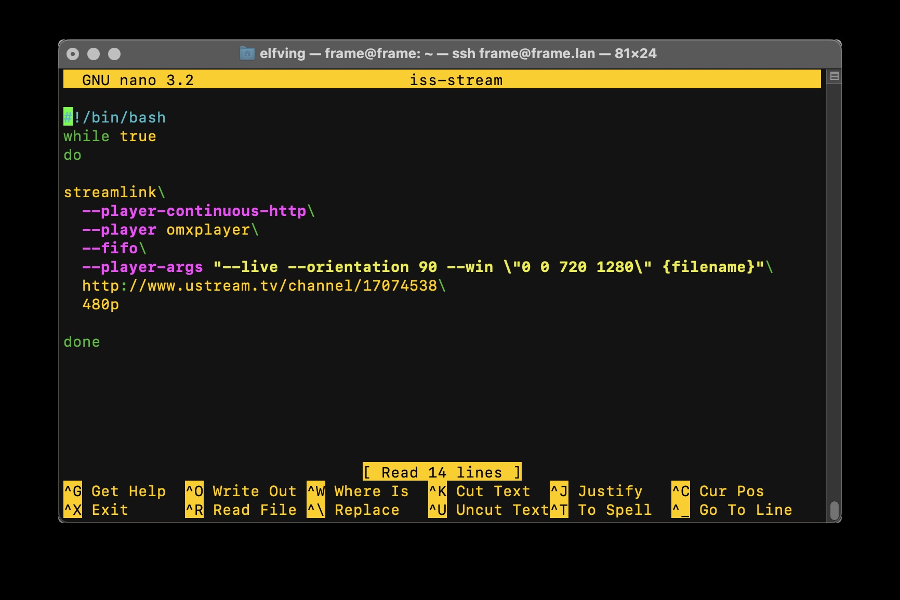

The Everything Frame!
Presentation Link:
 |
 |
 |
| Gallery | Live Streams | Video |
A Workshop in Five Parts:
- What is a Raspberry Pi?
- Kit Components
- OS Installation
- Assembly
- Software & Scripting
1: What's a Pi?
In brief, The Raspberry Pi is a:
Source: https://simpleweb.co.uk/10-years-of-raspberry-pi-an-interview-with-creator-eben-upton/To build an art installation, measure rainfall, make a light-up dress – none of those things sound like computer science but they’re all things that computers can help you do – that’s the message we’re really trying to get across.
- Eben Upton
Unable to Meet DemandBetween commercial clients, educators and makers, there aren't enough for everyone. |
 |
The retail price is $45

Source: https://www.raspberrypi.com/news/production-and-supply-chain-update/Right now we feel the right thing to do is to prioritise commercial and industrial customers – the people who need Raspberry Pis to run their businesses – we’re acutely aware that people’s livelihoods are at stake.
- Eben Upton
2: Kit Components
Raspberry Pi 3A+
The heart of it all. Smaller than the Pi 4, it has a 64-bit processor, wi-fi and Bluetooth.
And, of course, HDMI out.

10.1 inch IPS Display
Designed for the Pi, this includes an HDMI connector, speakers, and a little stand.
It's also a touch screen!

SD Card
This will contain the operating system, applications, and all the media on our frames.

5V 2.5A Power Supply
Just what it sounds like.
The Raspberry Pi 3A+ can also be powered by a micro USB cable connected to a computer or USB wall adapter.

3: OS Install
Download the Imager

Choose an OS
Select:
Raspberry Pi OS (other)
Then select:
Raspberry Pi OS Lite (Legacy)

Select SD Card
Look for your SD card in the pop-up window. It may have a generic name.

Name your Pi & create a user
Click on the gear icon. Create a hostname, a username, and add WiFi and locale information.

Write the OS
Hit the write button. Once complete, eject the SD card and insert it into your Pi.
Plug it in and turn it on – it's alive!

SD Card

Happy Lights!

Meet the Terminal
Mac: press command space, type "terminal"
Windows: click the search icon, type "terminal"

It will look somewhat like this:

In the terminal:
Raspberry Pi configuration:

Expand the filesystem:
Tap down to open "Advanced Options" then select "Expand Filesystem" from the menu.
Select "Finish" and reboot.

4: Assembly!
Front

Back

1: This Bag

2: HDMI Connector

3: Standoffs

4: Connect Pi

5: Little Screws

6: This Cable

7: Connect Cable

8: Speakers

9: Adapter

10: Power In

5: Software!
Again to the terminal:
Are you creating a vertical frame?
config.txt

At the end of the file, add this:
Let's try it!
streamlink --player-continuous-http --player omxplayer --fifo --player-args "--live --win \"0 0 1280 720\" {filename}" http://www.ustream.tv/channel/17074538 480p
Let's try it vertical!
streamlink --player-continuous-http --player omxplayer --fifo --player-args "--live --orientation 90 --win \"0 0 720 1280\" {filename}" http://www.ustream.tv/channel/17074538 480p
Let's make a script for this:
Empty...for now
Copy this:
#!/bin/bash
while true
do
streamlink\
--player-continuous-http\
--player omxplayer\
--fifo\
--player-args "--live --orientation 90 --win \"0 0 720 1280\" {filename}"\
http://www.ustream.tv/channel/17074538\
480p
done
iss-stream in nano
Make it executable:
Let's upload content to the Pi:
We can script this too!
#!/bin/bash
while true
do
omxplayer --loop ~/file.mp4
done